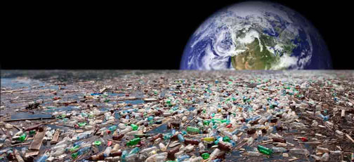

Major causes for poor water management and sanitation
Causes of Water Scarcity
- Overuse of Water: Water overuse is a huge issue that a lot of people are dealing with. It may be overused on people, animals, land, or any other number of things. It may also be used for recreational activities without any care about the effects that it may have on the world around them.
- Pollution of Water: Water pollution is a huge problem, especially when you’re looking at areas that don’t necessarily have a good sewage system. Pollution can be anything from oil, to carcasses, to chemicals, and to fecal matter. No matter what it is; it makes a lot of issues for the people who may need to use it.

- Conflict: If there is conflict over an area of land, it may be difficult to access the water that is located there. In the worst case scenarios, people could end up dying if they try to access the water in these areas (due to violence). This can result in a variety of other issues, including pollution, which we discussed in the previous point.
- Distance: There are a number of areas throughout the entire world that deal with water scarcity because they just aren’t close to anywhere that has water. Areas that are considered to be desert, or areas that are secluded, may not have somewhere that the people can get water effectively.
- Drought: A drought is, in short, an area which is not getting enough rainfall to be able to sustain the life that is residing there. Some areas are in perpetual drought, whereas other areas may be dealing with a drought on occasion. Droughts are common all over the world, and there is little that can be done to prevent such things from happening.

- Governmental Access. In some countries, specifically those with dictatorships, the use of water may be strictly controlled by those in power, causing a scarcity for those who may be located in those areas of the world. These governments use it as a source of control over those that they are governing, which can be a huge problem.